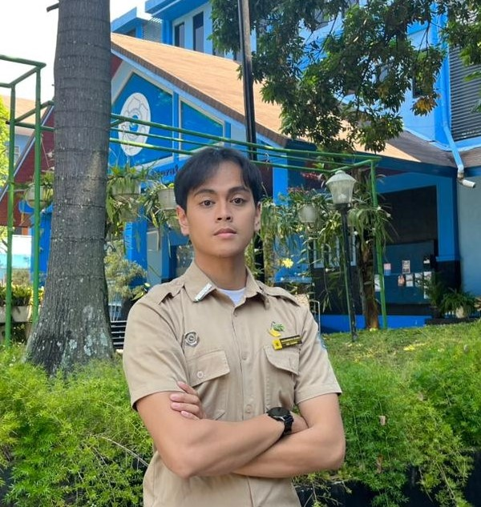
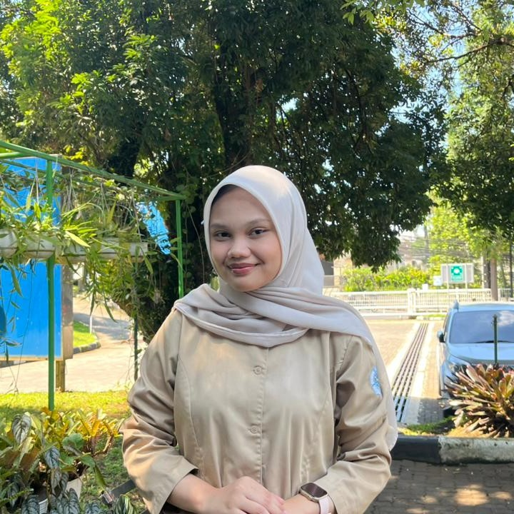
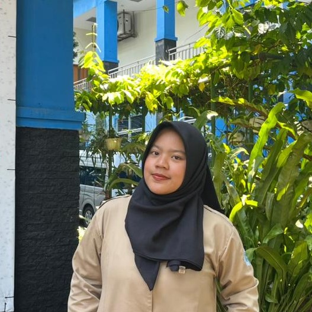
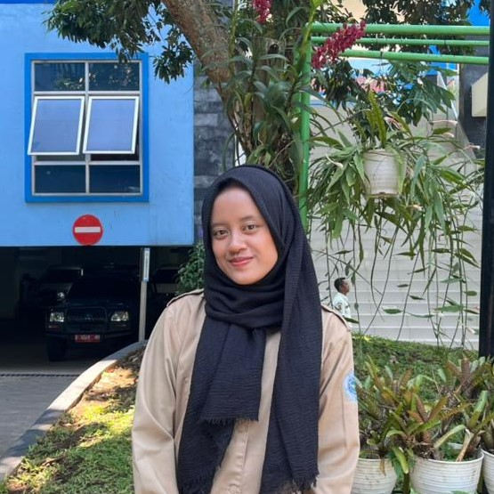
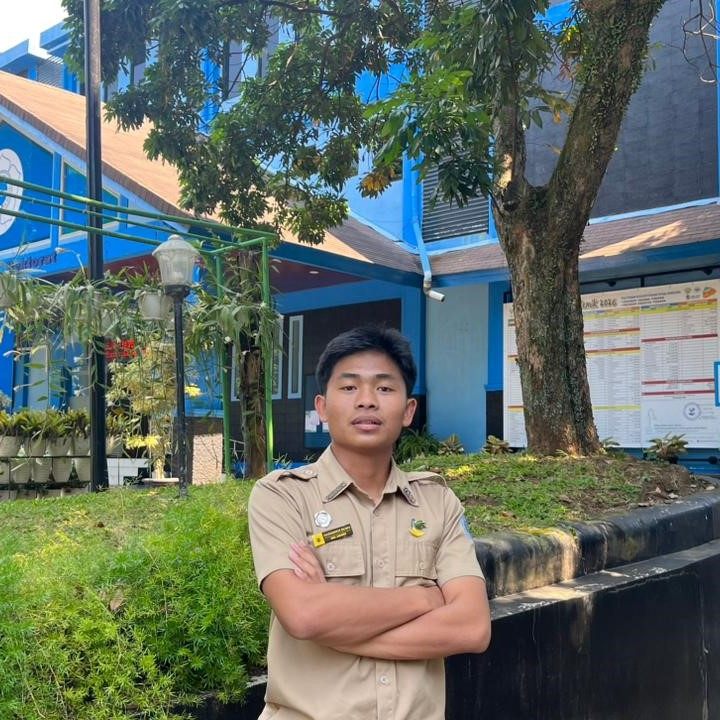

Kami merupakan mahasiswa Politeknik Kesejahteraan Sosial Bandung yang sedang mengembangkan website BERSENJA sebagai inovasi sosial berbasis teknologi untuk mendukung pemberdayaan lansia. Melalui website ini, kami berupaya menciptakan wadah yang dapat membantu lansia tetap produktif, mandiri, dan memiliki kesempatan untuk meningkatkan kesejahteraan sosial maupun ekonomi.
Sebagai mahasiswa kesejahteraan sosial, kami ingin menghadirkan solusi yang tidak hanya bermanfaat secara digital, tetapi juga memiliki dampak sosial nyata bagi masyarakat, khususnya bagi kelompok lansia.
“Menjadi platform pemberdayaan lansia yang inovatif, inklusif, dan berkelanjutan dalam meningkatkan kemandirian, kesejahteraan sosial, serta kualitas hidup lansia melalui teknologi informasi.”

NRP: 2404178
Instagram: @gamuuumh

NRP: 2404097
Instagram: @nafilahnuraa

NRP: 2404038
Instagram: @dlsnanrr

NRP: 2404184
Instagram: nininggndwa

NRP: 2404089
Instagram: julkam_21